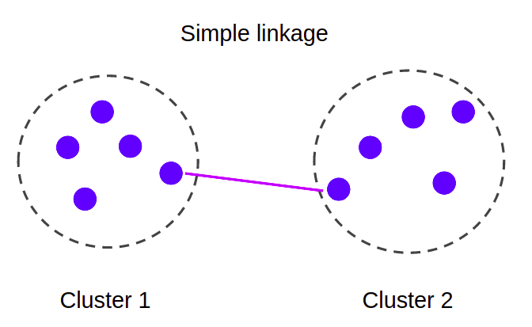

Single-linkage clustering
Single-linkage clustering is one of several methods of hierarchical clustering. It is based on grouping clusters in bottom-up fashion (agglomerative clustering), at each step combining two clusters that contain the closest pair of elements not yet belonging to the same cluster as each other. A drawback of this method is that it tends to produce long thin clusters in which nearby elements of the same cluster have small distances, but elements at opposite ends of a cluster may be much farther from each other than two elements of other clusters. This may lead to difficulties in defining classes that could usefully subdivide the data1

Approach
At the start all points form their own component. Then at each iteration, we fuse together those components that are connected by the shortest distance edge. We repeat until the number of components left is equal to the number of clusters required.
This is exactly how the Kruska's algorithm works, with the only difference, the produced Minimum Spanning Tree can be seen as a single component / cluster, therefore we have to stop the process until k components/clusters are left.
However, if we stop the at k components our min spanning tree won't have the remaining edges connecting the clusters, hence we won't know the clusters' spacing, that is, the distance between the closest together pair of separated nodes.
ClusterSet Structure
Therefore, we need to capture both (a) the min spanning tree and (b) the nodes forming the k clusters requested
The ClusterSet structure captures such information and further provides the means to query the spacing of a clustering, through the use of the following functions,
crossing_edges()returns thosemstedges crossing the nodeclustersspacing()returns the smallestmstedge
struct ClusterSet {
mst: Graph,
clusters : SuperNodes
}
impl ClusterSet {
/// spacing of a clustering. It's the distance between the closest together pair of separated points
/// We want all of the separated points to be as far apart as possible.
/// That is, we want the spacing to be big. The bigger the better
fn spacing(&self) -> Edge {
self.crossing_edges().pop().unwrap_or_else(|| panic!("spacing(): no edges found spanning the clusters"))
}
fn crossing_edges(&self) -> BinaryHeap<Edge>{
let mut input = self.mst.get_edges_by_cost();
let mut output = BinaryHeap::<Edge>::new();
while let Some(edge) = input.pop() {
let Edge(src, dst) = edge;
if self.clusters.find_supernode(&src) != self.clusters.find_supernode(&dst.into()) {
output.push(edge);
}
}
output
}
}
Implementation
With the ClusterSet data structure in place we implemented the Graph implementation of the Clustering trait looks as follows
trait Clustering {
fn find_clusters(&self, k: usize) -> Option<ClusterSet>;
}
impl Clustering for Graph {
fn find_clusters(&self, k: usize) -> Option<ClusterSet> {
// Get the ordered heap by lowest cost Edge on top
let mut heap = self.get_edges_by_cost();
// Keeps the graph's components, that is, a super node is a graph component's lead node
// The initial state is for each node to be a lead component node with a component of its own
let mut snodes = self.get_super_nodes();
// the output graph that will hold *only* the edges
// that form the minimum spanning tree
let mut graph = Graph::new();
let mut clusters = None;
// As long as more than 2 components
while snodes.len() > 1 {
// get the edge with the lowest cost
// otherwise if we've run out of edges while there are 2 or more components
// then the graph IS NOT CONNECTED
let Some(edge) = heap.pop() else { return None };
let Edge(src, NC(dst, _)) = edge else { panic!("find_clusters() - Cannot find NodeType::NC") };
// print!("({src:2}->{dst:2}):{cost:6} - ");
// if src is not a super node then get its super node
let src = snodes.find_supernode(&src);
// if dst is not a super node then get its super node
let dst = snodes.find_supernode(&dst);
// if src component differs from dst component then merge the two and save the edge connecting them
if src != dst {
snodes.merge_nodes(src, dst);
graph.push_edge(edge);
// println!("Store");
} else {
// println!("Skip");
}
if snodes.len() == k {
clusters = Some(snodes.clone())
}
}
Some(ClusterSet{
mst: graph,
clusters: clusters.unwrap()
})
}
}